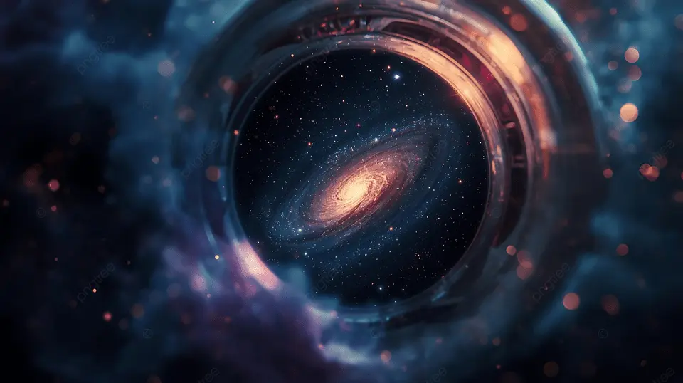
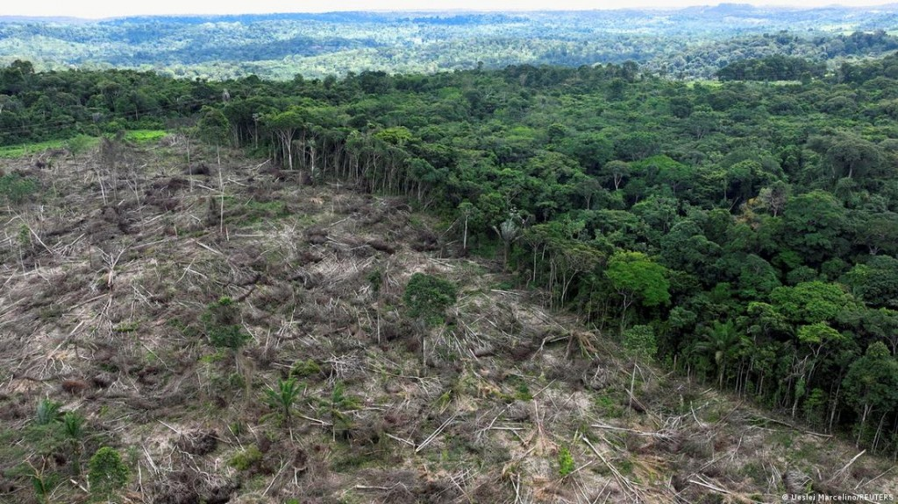
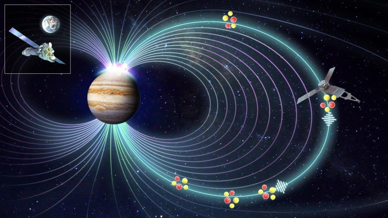
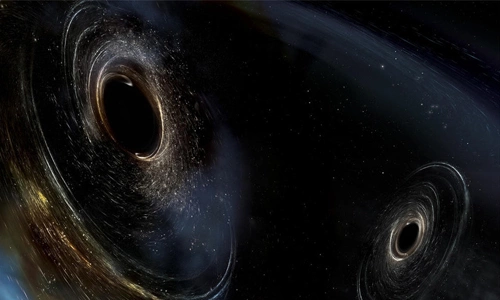
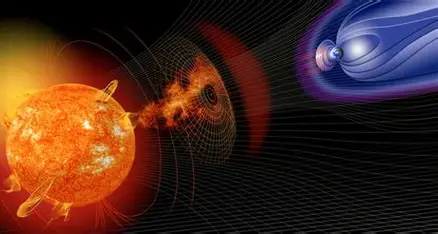
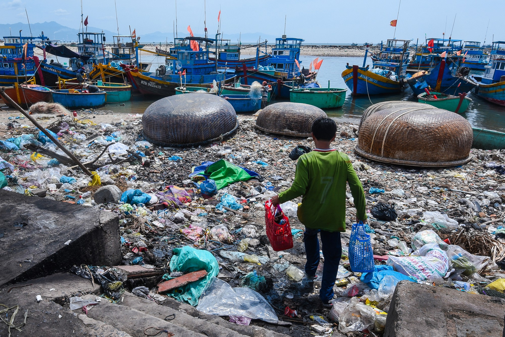

Nổi bật
Khám phá bí ẩn vũ trụ: Từ Big Bang đến tương lai
Những nghiên cứu mới đang mở ra cái nhìn rõ hơn về vũ trụ và sự thay đổi của môi trường không gian.
Nguyễn Văn A • 8 phútKhám phá những tin tức khoa học và thiên nhiên hấp dẫn nhất
Những nghiên cứu mới đang mở ra cái nhìn rõ hơn về vũ trụ và sự thay đổi của môi trường không gian.
Nguyễn Văn A • 8 phút
Bảo tồn hệ sinh thái trong bối cảnh khí hậu thay đổi.
Nguyễn Văn B • 15 phút
Những bước tiến mới trong nghiên cứu ngoài không gian.
Nguyễn Văn C • 10 phút
Các hoạt động nghiên cứu không gian hiện nay đang ghi nhận nhiều kết quả đáng chú ý, góp phần làm rõ hơn quá trình hình thành và phát triển của các thiên hà, hành tinh cũng như những khu vực xa xôi trong vũ trụ. Với sự hỗ trợ của các kính viễn vọng thế hệ mới như James Webb Space Telescope, các nhà khoa học đã thu được những hình ảnh có độ phân giải cao, cho phép quan sát chi tiết các vùng hình thành sao và cấu trúc vật chất trong không gian. Những dữ liệu này đang mở rộng phạm vi nghiên cứu thiên văn, đồng thời cung cấp thêm cơ sở để hiểu rõ hơn về nguồn gốc và sự vận động của vũ trụ.
Những biến động của thiên nhiên trên phạm vi toàn cầu đang được ghi nhận rõ nét khi nhiệt độ trung bình tiếp tục gia tăng, kéo theo tốc độ băng tan nhanh hơn tại nhiều khu vực. Mực nước biển vì thế có xu hướng dâng cao, ảnh hưởng đến cấu trúc tự nhiên của các vùng ven biển và đại dương. Nhiều hệ sinh thái quan trọng cũng cho thấy dấu hiệu mất cân bằng, điển hình như Great Barrier Reef với sự thay đổi về màu sắc và môi trường sống của sinh vật biển. Cùng với đó, các hiện tượng thời tiết cực đoan như nắng nóng kéo dài, mưa lớn hay bão mạnh xuất hiện với tần suất cao hơn, phản ánh sự biến đổi rõ rệt của thiên nhiên trên toàn thế giới.
Tại Việt Nam, các biến động của thiên nhiên đang thể hiện ngày càng rõ qua nhiều hiện tượng thực tế. Khu vực Đồng bằng sông Cửu Long thường xuyên ghi nhận tình trạng xâm nhập mặn diễn ra sớm và kéo dài, ảnh hưởng trực tiếp đến nguồn nước và hệ sinh thái đặc trưng. Ở miền Trung, các đợt bão và mưa lớn có xu hướng diễn biến phức tạp hơn, gây biến đổi đáng kể đến điều kiện tự nhiên khu vực. Trong khi đó, tại các đô thị lớn như Hà Nội và Thành phố Hồ Chí Minh, nhiệt độ có xu hướng gia tăng rõ rệt, đặc biệt vào các giai đoạn cao điểm nắng nóng, phản ánh đặc trưng khí hậu đô thị ngày càng rõ nét.
Các ghi nhận gần đây cho thấy những biến động này không còn mang tính cục bộ mà đang diễn ra trên diện rộng, theo chu kỳ ngày càng dày hơn. Nhiều nhận định chuyên môn cho rằng trong thời gian tới, các đặc điểm tự nhiên này có thể tiếp tục thay đổi theo hướng rõ rệt hơn, đòi hỏi việc theo dõi và cập nhật thông tin một cách liên tục để phục vụ nghiên cứu và quan sát thực tế.

Tích cực: Những biến động của vũ trụ và thiên nhiên trong thời gian gần đây đang tạo ra cả cơ hội lẫn thách thức rõ rệt. Ở chiều tích cực, các hiện tượng tự nhiên và dữ liệu quan sát được đã thúc đẩy mạnh mẽ hoạt động nghiên cứu khoa học, đặc biệt trong các lĩnh vực khí hậu, môi trường và không gian. Đồng thời, những thay đổi này cũng góp phần nâng cao nhận thức về thiên nhiên và khuyến khích phát triển các nguồn năng lượng sạch, thân thiện với môi trường.
Thách thức: Tuy nhiên, đi kèm với đó là nhiều thách thức đáng chú ý. Tần suất và cường độ của các hiện tượng thiên tai có xu hướng gia tăng, tác động trực tiếp đến sản xuất nông nghiệp, nguồn nước và điều kiện sinh hoạt. Những yếu tố này đang ảnh hưởng ngày càng rõ đến chất lượng sống, đòi hỏi sự thích ứng linh hoạt trước những biến động của tự nhiên trong giai đoạn hiện nay.
Những bài viết cùng chủ đề đang được quan tâm

Những quan sát gần đây từ các thiết bị không gian như Chandra X-ray Observatory đang mang lại góc nhìn mới về quá trình hình thành sao. Thông qua việc ghi nhận tia X phát ra từ các vùng không gian năng lượng cao, các nhà khoa học có thể theo dõi sự sụp đổ của các đám mây khí và bụi. Dữ liệu này giúp làm rõ hơn những giai đoạn đầu tiên khi một ngôi sao bắt đầu hình thành và phát triển. Qua đó, hiểu biết về vòng đời của các thiên thể trong vũ trụ tiếp tục được mở rộng.
Trần Khoa Y • 6 phút
Những nghiên cứu gần đây về sóng hấp dẫn đang cung cấp thêm thông tin quan trọng về bản chất của các hố đen trong vũ trụ. Thông qua các tín hiệu được ghi nhận bởi LIGO, các nhà khoa học có thể phát hiện sự va chạm và hợp nhất của các hố đen ở khoảng cách rất xa. Những dữ liệu này giúp làm rõ hơn cấu trúc, khối lượng và cách các hố đen tương tác với nhau. Qua đó, nhiều giả thuyết trước đây về sự tồn tại và phát triển của hố đen đang dần được kiểm chứng.
Lê Minh Huy • 5 phút
Các nghiên cứu gần đây cho thấy những cơn bão Mặt Trời có thể gây tác động đáng kể đến hệ thống định vị toàn cầu (GPS). Khi các luồng hạt mang điện từ Mặt Trời va chạm với từ quyển Trái Đất, chúng có thể làm nhiễu tín hiệu vệ tinh và gây sai lệch dữ liệu định vị. Hiện tượng này đã được ghi nhận trong một số thời điểm hoạt động Mặt Trời tăng cao, ảnh hưởng đến hàng không, hàng hải và các dịch vụ dựa trên GPS. Điều này cho thấy mối liên hệ trực tiếp giữa hoạt động vũ trụ và các hệ thống công nghệ hiện đại trên Trái Đất.
Phạm Lan Anh • 4 phút
Tại Việt Nam, các khu vực biển đang cho thấy nhiều thay đổi đáng chú ý trong hệ sinh thái tự nhiên. Một số vùng ven biển và đảo ghi nhận sự thay đổi về số lượng và phân bố của các loài sinh vật biển, phản ánh sự dịch chuyển trong môi trường sống. Khu vực Biển Đông và các vùng ven bờ xuất hiện hiện tượng suy giảm ở một số rạn san hô, trong khi một số loài khác lại thích nghi và phát triển theo điều kiện mới. Những ghi nhận này cho thấy thiên nhiên biển Việt Nam đang vận động liên tục và có sự thay đổi theo từng giai đoạn.
Nguyễn Đức Vinh • 7 phútNhững bài phân tích chuyên sâu về khoa học và môi trường
Phân tích chi tiết về những thay đổi trong hệ sinh thái và đề xuất giải pháp bảo tồn.
Phân tích • 12 phút đọcCách AI đang thay đổi cách chúng ta khám phá và hiểu về vũ trụ.
Phân tích • 10 phút đọcĐăng ký nhận bản tin để không bỏ lỡ những cập nhật về khoa học và thiên nhiên
Những chủ đề đang được quan tâm nhất
1.2K bài viết
890 bài viết
756 bài viết